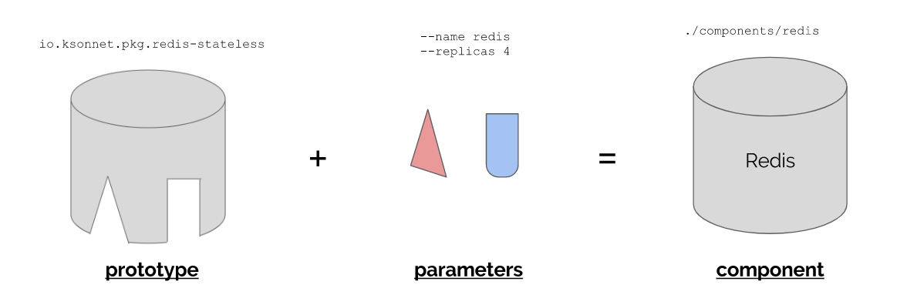

1. 概述
ksonnet is a framework for writing, sharing, and deploying Kubernetes application manifests(配置文件). With its CLI, you can generate a complete application from scratch in only a few commands, or manage a complex system at scale.
ksonnet 是一个基于jsonnet的快速简化kubernetes yaml 配置的工具，可以实现配置的复用.
1.1. 基本概念 2
1.1.1. ksonnet application 应用
一个ksonnet应用就是一个结构化的Kubernetes配置文件夹
A ksonnet application represents a well-structured directory of Kubernetes manifests.
1.1.2. ksonnet component组件
一个应用可以分成多个组件,一个组件可以是一个Kubernetes资源 或者多个资源
1.1.3. ksonnet environments 环境
4个关键元素决定一个环境的配置.
| What | Example | Description | How is this tracked? |
|---|---|---|---|
| (1) Name | dev | 字符串,在ksonnet app 中必须是unique的 | A directory under environments/ (e.g. environments/dev/). A name with slashes results in a hierarchical file structure. For example, us-west/staging creates environments/us-west/staging/. |
| (2) Server | https://cluster-name-with-hash.us-west-2.elb.amazonaws.com | The address and port of a Kubernetes API server. In other words, identifies a unique cluster. | Inside app.yaml |
| (3) Namespace | dev | Specifically, a Kubernetes namespace. | Inside app.yaml |
| (4) Kubernetes API version | version:v1.7.1 | The version of your cluster's Kubernetes API server, defaults to v1.8.0. | Used to generate appropriate files in lib/ksonnet-lib/ based on the specified version of the Kubernetes OpenAPI spec |
1.1.4. prototype 原型
原型可以想象为类与Class相似,Component 是 prototype 的实例.
prototype 本身就是提前写好但未完成的配置文件,使用prototype可以避免对重复文件的粘贴复制。
仓库:包的集合
包:原型的集合
Component=prototype(parameters) pakages=Components=[Component_1,Components_2,...,]

1.1.5. Package 资源包
包是一系列相关的原型prototypes的集合
A package contains:
1. A set of related prototypes (e.g. redis-persistent, redis-stateless)
2. Associated helper libraries that define the prototype parts (e.g. redis.libsonnet)
典型的资源包目录文件夹
. ├── README.md // Human-readable description of the package ├── parts.yaml // Provides metadata about the package ├── prototypes // Can be imported and used to generate components │ ├── redis-all-features.jsonnet │ ├── redis-persistent.jsonnet │ └── redis-stateless.jsonnet └── redis.libsonnet // Helper library, includes prototype parts
parts.yaml 里面是关于包的源数据 。metadata is used to populate the output of the ks prototype describe command.
1.1.6. Registry 仓库
Registries 仓库通过在根目录下的 registry.yaml文件确定该仓库的packages数量。
一个典型的仓库文件夹目录结构如下：
. ├── nginx // nginx package │ ├── README.md │ ├── nginx.libsonnet │ ├── parts.yaml │ └── prototypes │ ├── nginx-server-block.jsonnet │ ... ├── redis // redis package │ ├── README.md │ ├── parts.yaml │ ├── prototypes │ │ ├── redis-all-features.jsonnet │ │ ... │ └── redis.libsonnet └── registry.yaml // Lists all
用户可以使用默认或自定义的仓库：
1. 默认仓库
默认仓库为 Incubator（孵化器）Registry
* 默认情况下从/ksonnet/parts/incubator 仓库下载（Github 地址：https://github.com/ksonnet/parts/tree/master/incubator）
- 自定义仓库
有3种方式： - Github - a Github URI
- Filesystem 本地文件系统 - a valid path to a local registry
- Helm - a URI to a Helm repository
2. 安装
2.1. 二进制文件
https://github.com/ksonnet/ksonnet/releases/tag/v0.13.1
2.2. 源码安装
# Clone the ksonnet repo into your GOPATH go get github.com/ksonnet/ksonnet # Build and install binary under shortname `ks` into $GOPATH/bin cd $GOPATH/src/github.com/ksonnet/ksonnet make install
2.3. 国内镜像
curl -o ks_0.9.2_linux_amd64.tar.gz http://kubeflow.oss-cn-beijing.aliyuncs.com/ks_0.9.2_linux_amd64.tar.gz tar -xvf ks_0.9.2_linux_amd64.tar.gz cp ks_0.9.2_linux_amd64/ks /usr/local/bin/ #检查是否安装成功 ks version >>>
3. 基础命令
使用 ks 命令行生成Kubernetes资源本地（在 jsonnet）的配置文件
# 帮助文件 ks --help
3.1. ksonnet app 的初始化创建
使用ks init命令1创建ksonnet 应用,输出的结果就是生成结构化的k8s应用配置文件.
# 创建名为<app-name> 的 文件夹，并初始化ksonnet应用 ks init <app-name> [flags]
#设置context为 'dev'. ks init app-name --context=<dev> # 设置context为 'dev',namespace 为"dc-west" ks init app-name --context=dev --namespace=dc-west # Initialize a ksonnet application, using v1.7.1 of the Kubernetes OpenAPI spec # to generate 'ksonnet-lib'. ks init app-name --api-spec=version:v1.7.1 # Initialize a ksonnet application, using the OpenAPI spec generated by a # specific build of Kubernetes to generate 'ksonnet-lib'. ks init app-name --api-spec=file:swagger.json # 设置输出应用的文件夹为'custom-location' ks init app-name --dir=custom-location
生成目录结构
. ├── app.yaml # 应用配置信息(name version) ├── components # k8s对象的配置信息 │ └── params.libsonnet ├── environments # 应用环境 │ ├── base.libsonnet │ └── default │ ├── globals.libsonnet │ ├── main.jsonnet │ └── params.libsonnet ├── .gitignore ├── .ksonnet │ └── registries ├── lib # 用户写入的.libsonnet文件 └── vendor # 定义性质的库
3.2. 为应用生成组件(配置文件)component manifest
Use the specified prototype to generate a component manifest by ks generate.
使用ks generate可以将您的空app变成一个拥有多个组件/配置文件的用于。该命令通过指定原型文件生成组件的配置文件。
cd <project-dir> ks generate <prototype-name> <component-name> [type] [parameter-flags] [flags] # 查看发生了什么变化 tree -l >>> <project-dir> ├── components │ ├── <component-name> .jsonnet │ └── params.libsonnet
3.3. 将配置文件的应用在集群中
ks apply — Apply local Kubernetes manifests (components) to remote clusters
ks apply <env-name> [-c <component-name>] [--dry-run] [flags] # 在<env-name> 环境里面生成（或更新）所有组件资源（定义在~/components下的组件） ks apply <env-name> # ks apply dev --dry-run # 指定组件 ks apply dev -c guestbook-ui # Create or update multiple components in a ksonnet application (e.g. 'guestbook-ui' # and 'nginx-depl') for the 'dev' environment. Does not create resources that are # not already present on the cluster. # # This essentially deploys 'components/guestbook-ui.jsonnet' and # 'components/nginx-depl.jsonnet'. ks apply dev -c guestbook-ui -c nginx-depl --create false
3.4. 将资源从集群中删除
- Delete resources running on a cluster
ks delete
3.5. 组件的管理
3.5.1. prototype
ks prototype list ks prototype search ks prototype describe ks prototype preview ks prototype use
3.5.2. packages
# 查看所有的包packages ks pkg list >>> REGISTRY NAME VERSION INSTALLED ENVIRONMENTS ======== ==== ======= ========= ============ incubator apache 2a6bd08597dde82a3d7eb7084585b3383ba6efe0 incubator efk 2a6bd08597dde82a3d7eb7084585b3383ba6efe0 incubator mariadb 2a6bd08597dde82a3d7eb7084585b3383ba6efe0 incubator memcached 2a6bd08597dde82a3d7eb7084585b3383ba6efe0 incubator mongodb 2a6bd08597dde82a3d7eb7084585b3383ba6efe0 incubator mysql 2a6bd08597dde82a3d7eb7084585b3383ba6efe0 incubator nginx 2a6bd08597dde82a3d7eb7084585b3383ba6efe0 incubator node 2a6bd08597dde82a3d7eb7084585b3383ba6efe0 incubator postgres 2a6bd08597dde82a3d7eb7084585b3383ba6efe0 incubator redis 2a6bd08597dde82a3d7eb7084585b3383ba6efe0 incubator tomcat 2a6bd08597dde82a3d7eb7084585b3383ba6efe0 #描述包 ks pkg describe <registry>/<package> >>> LIBRARY NAME: incubator/mysql DESCRIPTION: MySQL is one of the most popular database servers in the world. Notable users include Wikipedia, Facebook and Google. # 为当前 ksonnet app 添加 ks pkg install <registry>/<package>@<version> [flags] >>>
3.5.3. 仓库
Manage registries for current project by ks registry
# 1. 查看仓库 ks registry list >>> NAME OVERRIDE PROTOCOL URI ==== ======== ======== === incubator github github.com/ksonnet/parts/tree/master/incubator # 描述仓库 ks registry describe <registry-name> [flags] # 添加仓库 ks registry add <registry-name> <registry-uri> [flags] >>> ~/app/.ksonnet/ └── registries ├── incubator │ └── registry.yaml └── <new-registry-name> # 新仓库 └── registry.yaml # 本质是在.ksonnet文件夹下创建一个新的文件夹<registry-name> ，把目标仓库的registry.yaml 复制过来
添加不同类型的仓库
# Add a registry with the name 'databases' at the uri 'github.com/example' ks registry add databases github.com/example # Add a registry with the name 'databases' at the uri # 'github.com/org/example/tree/0.0.1/registry' (0.0.1 is the branch name) ks registry add databases github.com/org/example/tree/0.0.1/registry # Add a registry with a Helm Charts Repository uri ks registry add helm-stable https://kubernetes-charts.storage.googleapis.com
3.5.4. 组件
ks component list >>> COMPONENT TYPE APIVERSION KIND NAME ========= ==== ========== ==== ==== ks component rm
3.6. 管理Environments
# 进入到应用文件夹后 # 查看所有环境 ks env list >>> NAME OVERRIDE KUBERNETES-VERSION NAMESPACE SERVER ==== ======== ================== ========= ====== # 添加环境到app中 ks env add <env-name> [flags] ks env add prod --server=https://ksonnet-1.us-west.elb.amazonaws.com ks env current ks env describe ks env list ks env rm ks env set ks env target ks env update
- 使用
ks param定制环境
ks param list ks param set
- 比较环境
ks diffks param diff
3.7. 其他
# 查看值指定<env>环境下的配置文件 ks show <env> [-c <component-filename>] [flags] # Show all of the components for the 'dev' environment, in YAML # (In other words, expands all manifests in the components/ directory) ks show dev # Show a single component from the 'prod' environment, in JSON ks show prod -c redis -o json # Show multiple components from the 'dev' environment, in YAML ks show dev -c redis -c nginx-server
- Import a manifest
-
ks import -
Validate manifests against the Kubernetes API
-
ks validate -
View metadata about the ksonnet binary
ks version
3.8. Github限速错误
如果您遇到错误，请说出某种效果，403 API rate limit of 60 still exceeded您可以通过获取Github个人访问令牌并将其设置为ks可以使用的方式来解决。Github对经过身份验证的用户的速率限制要高于未经身份验证的用户。
转到https://github.com/settings/tokens并生成一个新令牌。只需进行身份验证，就不必授予任何访问权限。
确保您将令牌保存在某个地方，因为您无法再次看到它。如果丢失，则必须删除并创建一个新的。
在您的shell中设置环境变量：export GITHUB_TOKEN=
echo "export GITHUB_TOKEN=${GITHUB_TOKEN}" >> ~/.bashrc export GITHUB_TOKEN=${GITHUB_TOKEN}